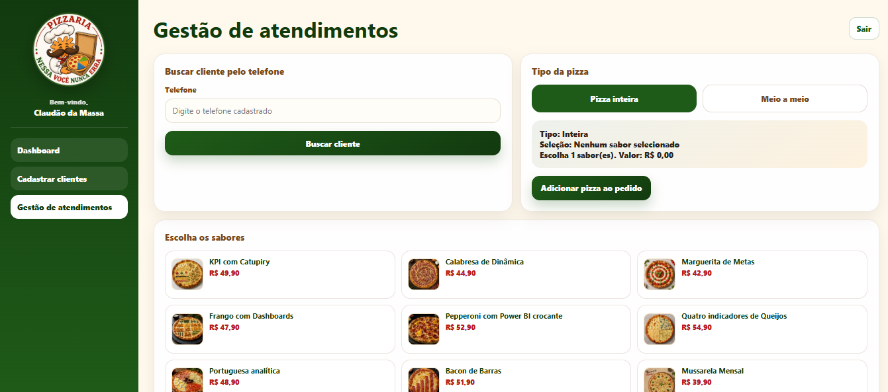
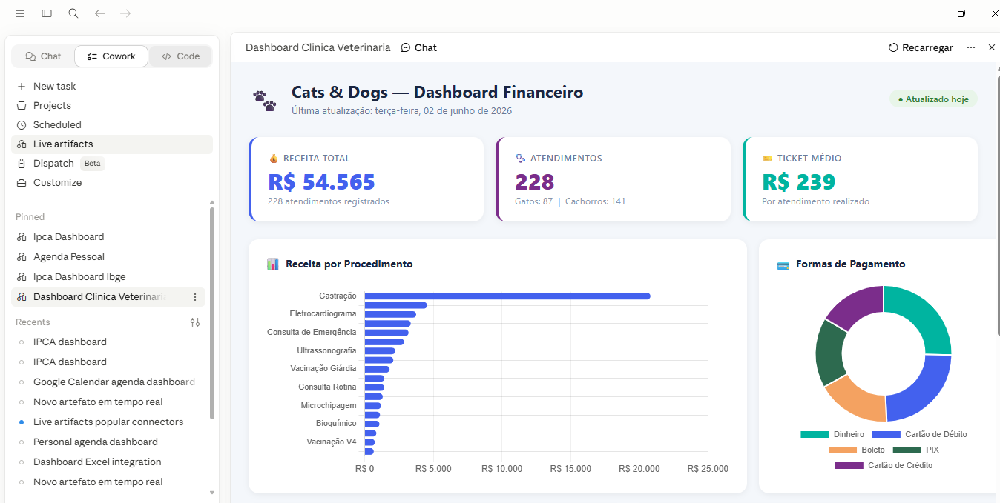

Todo projeto nasce de uma dor concreta. O exemplo da pizzaria mostra isso com clareza: uma cliente sempre precisava repetir endereço, pedido e informações básicas toda vez que ligava. O que parecia só um incômodo se transformou em oportunidade para criar um sistema de atendimento.
Processos repetitivos, manuais ou desorganizados podem virar soluções vendáveis.
A inteligência artificial não substitui a visão de negócio. Quem identifica o problema, entende a dor e traduz isso em solução é a pessoa que conhece o processo.
Uma planilha deixa de ser “só uma planilha” quando resolve um problema com organização, clareza e utilidade prática. O valor não está em usar a fórmula mais difícil, e sim em facilitar a rotina de quem usa.
Quem já sabe Excel, Power Query, Dashboards ou análise de dados não começa do zero na IA. Esse aluno já tem a visão de processo que a IA precisa para produzir algo útil.

O Claude é poderoso, mas precisa de direção. É importante quebrar a ideia de que basta escrever um prompt simples e tudo estará resolvido. A IA precisa de contexto, configuração, validação e limites.
Não é “a IA vai fazer por mim?”, e sim “como conduzo a IA para chegar no resultado que eu quero?”
O maior diferencial não está só na ferramenta. Está na experiência que cada pessoa já tem sobre RH, financeiro, vendas, projetos, operações ou qualquer outro processo real.
O Claude pode gerar estrutura, código, textos, interfaces e análises, mas quem garante que o projeto é útil, estratégico e aplicável é quem entende do negócio.
O Claude ajuda a sair do uso básico da IA para a construção de soluções mais completas. Ele pode apoiar a criação de sistemas, Dashboards, páginas, interfaces e aplicações com contexto e instruções específicas.
Ajuda a transformar uma dor em fluxo, tela, lógica e primeira versão funcional.
Apoia a construção de interfaces visuais, relatórios online e materiais interativos.
Funciona melhor quando recebe contexto, objetivo, regras, exemplos e limites claros.
Pense nele como um parceiro de construção. Quanto mais claro for o seu contexto, melhor será a execução.
Um dos pontos mais fortes é perceber que o Claude pode ir além de texto e análise. Ele pode ajudar a construir sistemas e Dashboards que saem do arquivo local e se tornam soluções acessíveis pela web.
O Claude cria a estrutura, mas muitas vezes será necessário usar ferramentas complementares para publicar, armazenar dados, conectar APIs ou liberar acesso externo.

Em vez de gerar um novo Dashboard todo mês, a solução pode ser conectada a uma fonte de dados. Quando a planilha muda, o Dashboard também pode ser atualizado.
Limite o acesso apenas às pastas e arquivos necessários, principalmente quando existirem dados sensíveis.
API é uma porta de comunicação entre sistemas. Ela permite que uma solução criada com apoio do Claude busque dados automaticamente em outras plataformas.
Algumas APIs exigem chave de acesso, documentação, autenticação e respeito aos limites de uso.
Publicar um projeto aumenta a percepção de valor. Um Dashboard ou sistema acessível por link, celular ou computador se aproxima mais de uma solução profissional.